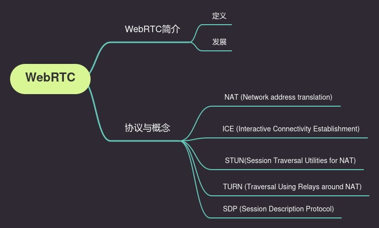
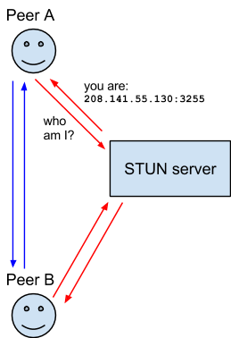
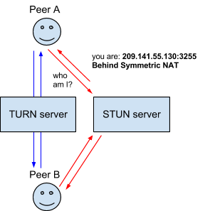

WebRTC概念简介¶
更新日期: 2021-12-01
- 2021-12-01 更新参考
- 2021-11-09 创建文档

简介¶
WebRTC（Web Real-Time Communication）。Real-Time Communication，实时通讯。
WebRTC能让web应用和站点之间选择性地分享音视频流。在不安装其它应用和插件的情况下，完成点对点通信。 WebRTC背后的技术被实现为一个开放的Web标准，并在所有主要浏览器中均以常规JavaScript API的形式提供。对于客户端（例如Android和iOS），可以使用提供相同功能的库。 WebRTC是个开源项目，得到Google，Apple，Microsoft和Mozilla等等公司的支持。2011年6月1日开源并在Google、Mozilla、Opera支持下被纳入万维网联盟的W3C推荐标准。
WebRTC包括一系列API和相互关联的协议来实现通信。
相关技术¶
VoIP¶
Voice over Internet Protocol，在网络上传输声音消息的技术。 例如网络音频通话。或者叫做IP电话，宽带电话。使用VoIP技术的一大原因是费用低。
相关协议¶
NAT¶
Network address translation，网络地址转换。 NAT能给你的设备一个公共IP地址。一个路由器（router）有一个公共IP地址，每个连接到路由的设备有一个私有的IP地址。 设备发送请求时，会从一个特定端口，通过私有IP发送到路由的公共IP。这样每个设备在网上不需要都有一个公共IP地址，但也能被其它设备发现。
参考 IP Network Address Translator (NAT) Terminology and Considerations
ICE¶
Interactive Connectivity Establishment，互动式连接建立（交互式连通性建立）。 ICE是一套能让web浏览器之间互相连接的框架。通常来说，节点A到B是很难直接相连的。防火墙会阻止连接，设备没有公共IP地址，路由不允许直接连接其他节点。 ICE使用STUN或者TURN服务（或者同时使用两者）来建立连接。
STUN¶
Session Traversal Utilities for NAT (STUN) ，NAT会话传输工具。 STUN协议能发现客户端（节点）的公共地址。客户端发送一个请求给网上的STUN服务器，服务器返回客户端的公共地址。不管客户端在路由器的NAT后能否可达。 STUN为请求者提供了可公开访问的IP地址，它就不再参与对话了。

有些路由器会限制设备与外面其它设备的连接。这意味着即使STUN服务器知道了路由的公共IP地址，也没法建立连接。 这种情况下我们需要使用TURN。
TURN¶
Traversal Using Relays around NAT，使用中继绕过NAT传输。 一些路由器使用一种叫“Symmetric NAT”（对称型NAT）的限制。这意味着路由器仅允许之前连接过的节点（peer）来建立连接。
STUN提供了一个能让应用（终端，节点）穿过NAT的方法。STUN允许客户端获得一个传输地址（一个IP和端口）来获取其它节点的数据。 然而STUN获取到的地址不一定能被所有节点使用。这些地址是否可用取决于网络拓扑的情况。所以，单独STUN无法提供完整的穿越NAT的方案。
TURN协议允许两个处于NAT环境的主机利用中继进行通讯。客户端能够在TURN服务器上分配资源，与其它客户端（peer）进行通讯。 客户端关联一个TURN服务器的地址（relayed server address）来作为中继。 客户端发送报文给TURN服务，TURN服务使用relayed server address作为源地址向其他客户端中继转发报文。 穿越NAT，这个过程就像是“打洞”。也有人称TURN服务器为“打洞服务器”。

这么看，TURN服务器需要有大的带宽。因此，ICE会优先考虑直接通讯，无法直接通讯情况下会使用TURN。
参考 TURN rfc8656
SDP¶
Session Description Protocol，会话描述协议。
描述多媒体连接内容的协议。例如分辨率，格式，编码，加密算法等等。
实际上，SDP不是个真正的协议。它也是用来描述设备之间连接与传输多媒体的数据格式。
参考 SDP: Session Description Protocol | rfc8866
参考¶
- 媒体设备入门 ｜ webrtc.org
- 2个节点建立连接时的沟通过程 ｜ MDN
- WebRTC 协议介绍 ｜ developer.mozilla.org
- 信令与视频通话 ｜ developer.mozilla.org
- WebRTC概念介绍 | rustfisher

一些缩写
- ACK: Acknowledgment (确认报文)
- AVP: Audio and Video profile (音频视频描述)
- B-Frame: Bi-directional Predicted Frame. A partial picture, is a modification of previous and future pictures. - (双向预测帧，存储图片的部分信息，存储的是相对前一张图片和后一张图片的差异信息)
- DCEP: Data Channel Establishment Protocol defined in RFC 8832 (DataChannel建立协议)
- DeMux: Demultiplexer (解复用器)
- DLSR: delay since last sender report (从最近一个Sender Report开始的时间延迟)
- DTLS: Datagram Transport Layer Security defined in RFC 6347
- E2E: end-to-end
- FEC: Forward Error Correction (前向纠错)
- FIR: Full INTRA-frame Request (完整I帧请求)
- G.711: A narrowband audio codec (一个窄带音频编码器)
- H.264: Advanced video coding for generic audiovisual services (面向通用视听服务的高级视频编码)
- H.265: Conformance specification for ITU-T H.265 high efficiency video coding. (ITU-T H.265高效视频编码的一致性规范)
- HEVC: High Efficiency Video Coding (高效视频编码)
- HTTP: Hypertext Transfer Protocol (超文本传输协议)
- HTTPS: HTTP Over TLS defined in RFC 2818 (基于TLS的HTTP)
- I-Frame: Intra-coded Frame. A complete picture, can be decoded without anything else. (内部编码帧，保存完整图片信息，- 自解码，不依赖外部数据)
- ICE: Interactive Connectivity Establishment defined in RFC 8445 (交互式连接建立协议)
- INIT: Initiate (初始化)
- IoT: Internet of Things (物联网)
- IPv4: Internet Protocol, Version 4 (第四代因特网协议)
- IPv6: Internet Protocol, Version 6 (第六代因特网协议)
- ITU-T: International Telecommunication Union Telecommunication Standardization Sector (国际电信联盟电信标准分局)
- JSEP: JavaScript Session Establishment Protocol defined in RFC 8829 (JavaScript会话建立协议)
- MCU: Multi-point Conferencing Unit (多点会话单元)
- mDNS: Multicast DNS defined in RFC 6762 (组播 DNS)
- MITM: Man-In-The-Middle
- MTU: Maximum Transmission Unit (最大传输单元)
- MUX: Multiplexing (复用，一般指把不同格式的数据合并存储或传输)
- NACK: Negative Acknowledgment (逆确认报文，ACK反馈收到报文,NACK反馈未收到报文 )
- NAT: Network Address Translation defined in RFC 4787 (网络地址转换，域名地址转换成IP地址)
- Opus: A totally open, royalty-free, highly versatile audio codec (一个完全开放、免版税、高度通用的音频编解码器)
- P-Frame: Predicted Frame. A partial picture, containing only changes from the previous picture. (前向预测帧，只保存- 相对于上一帧的差异信息)
- P2P: peer-to-peer
- PLI: Picture Loss Indication (图片丢失指示)
- PPID: Payload Protocol Identifier (Payload协议标识)
- REMB: Receiver Estimated Maximum Bitrate (接收端估计的最大比特率)
- RFC: Request for Comments (征求意见)
- RMCAT: RTP Media Congestion Avoidance Techniques (RTP媒体拥塞避免技术)
- RR: Receiver Report (RCTP接收者报告)
- RTCP: RTP Control Protocol defined in RFC 3550 (RTP控制协议)
- RTP: Real-time transport protocol defined in RFC 3550 (实施传输协议)
- RTT: Round-trip time (往返时间)
- SACK: Selective Acknowledgment (选择性确认)
- SCTP: Stream Control Transmission Protocol defined in RFC 4960 (流控传输协议)
- SDP: Session Description Protocol defined in RFC 8866 (会话描述协议)
- SFU: Selective Forwarding Unit (选择性转发单元)
- SR: Sender Report (RCTP发送者报告)
- SRTP: Secure Real-time Transport Protocol defined in RFC 3711 (安全的RTP)
- SSRC: Synchronization Source (同步源)
- STUN: Session Traversal Utilities for NAT defined in RFC 8489 (NAT会话穿透)
- TCP: Transmission Control Protocol (传输控制协议)
- TLS: The Transport Layer Security defined in RFC 8446 (传输层安全)
- TMMBN: Temporary Maximum Media Stream Bit Rate Notification (临时最大媒体流比特率通知)
- TMMBR: Temporary Maximum Media Stream Bit Rate Request (临时最大媒体流比特率请求)
- TSN: Transmission Sequence Number (传输序列号)
- TURN: Traversal Using Relays around NAT defined in RFC 8656 (基于转发的NAT穿透)
- TWCC: Transport Wide Congestion Control (传输拥塞控制)
- UDP: User Datagram Protocol (数据报协议)
- VP8, VP9: Highly-efficient video compression technologies (video “codecs”) developed by the WebM Project. - Anyone may use these codecs royalty-free. (WebM项目开发的高效视频压缩技术(视频编解码)，完全免费)
- WebM: An open media file format designed for the web. (一个开放的Web媒体文件格式)
- WebRTC: Web Real-Time Communications. W3C WebRTC 1.0: Real-Time Communication Between Browsers (Web实时通信)
WebRTC系列